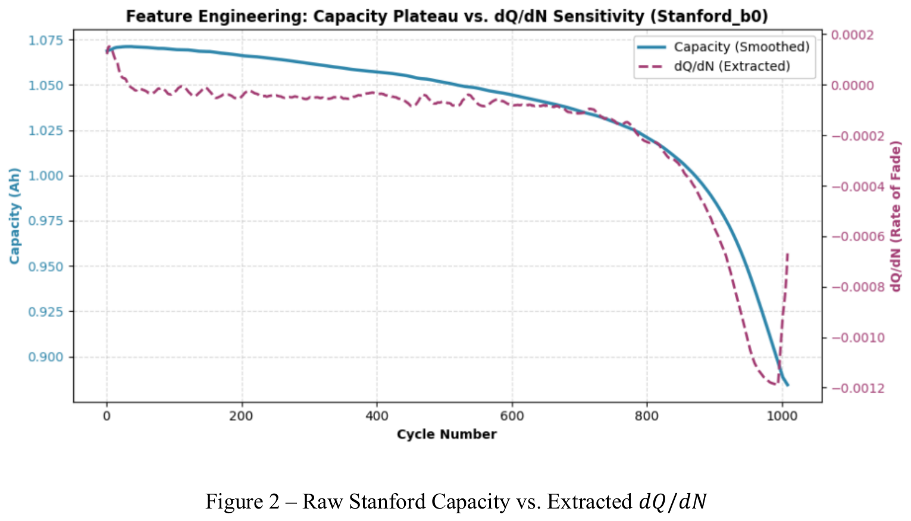
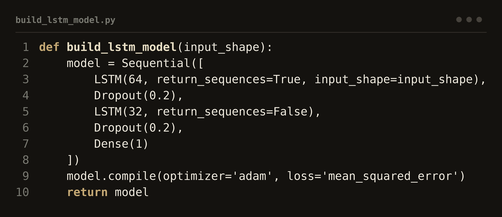

01
Machine Learning for the Remaining Useful Life of Lithium-Ion Batteries
I trained a two-layer LSTM on the Stanford/MIT battery-discharge dataset to predict how capacity fades over time and to catch the knee-point where decline suddenly accelerates, landing a mean absolute percentage error under 0.07%. I also built a Gradio interface for tuning the sequence length, epochs and train/test split, with guards so the model never leaks data across battery boundaries. The same forecasting idea carries straight over to risk and asset-default modelling.

